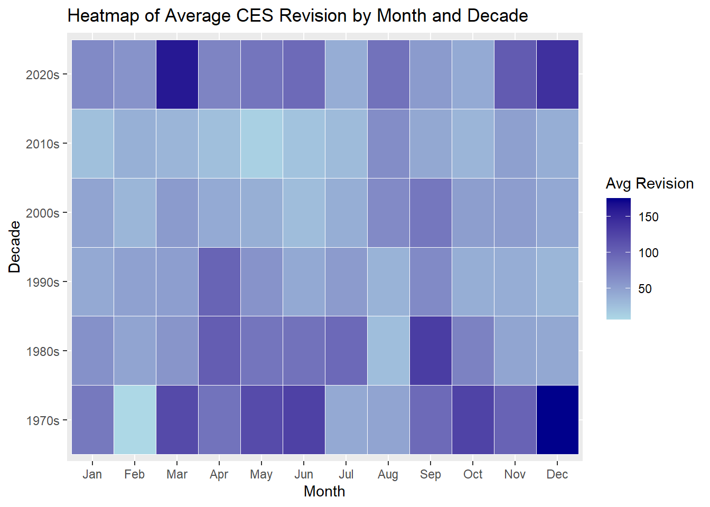
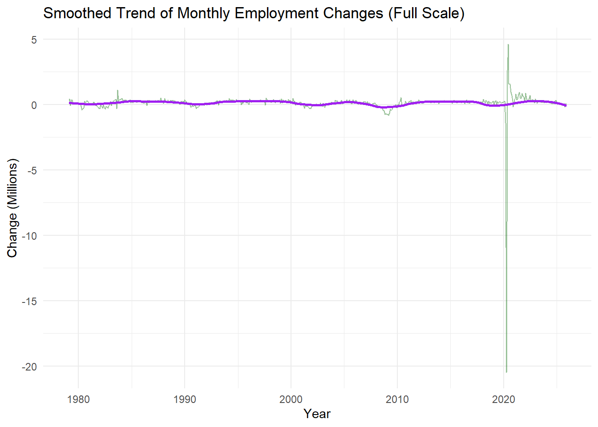

The labor market is one of the most closely monitored indicators of economic health, and official employment statistics play a critical role in shaping policy decisions, business strategies, and public perception. Among these, the Current Employment Statistics (CES) program is published by the U.S. Bureau of Labor Statistics (BLS) and provides monthly estimates of nonfarm payroll employment, hours, and earnings.
In this for this project, I will web scrape, conduct some statistical inference, and examine CES employment data and its revisions to look at some claims and determine how reliable they actually are.
Data Acquisition and Preparation
To aquire this data, I had to pull and tidy BLS employment data and its monthly revisions. I could pull the data from the xlsx file available to download, but writing code to do so for every revision year would be a hassle. So instead, I decided to web scrape the data. First, I checked the web developer tools, and found the POST request required for the specific table. I sent that request to the BLS endpoint to download the CES000000001 series (total nonfarm employment) and cleaned the table. Next, I scraped the BLS CES revision page, and wrote a function to extract from every year and bind every year from 1979-2025 into one large table. This leaves two tables to look at the revision amount and the employment amount every year.
Code
library(httr2)library(rvest)library(dplyr)library(tidyverse)library(lubridate)library(stringr)library(purrr)library(scales)library(cowplot)library(infer)# 1. Make POST requestreq <-request("https://data.bls.gov/pdq/SurveyOutputServlet") |>req_body_form(request_action ="get_data",reformat ="true",from_results_page ="true",from_year ="1979",to_year ="2025",Gx ="17",Go ="8",initial_request ="false",data_tool ="surveyoutput",series_id ="CES0000000001",original_annualAveragesRequested ="false" )resp <-req_perform(req)# 2. Parse HTMLhtml <-resp_body_html(resp)# 3. Extract correct table by IDdata_table <- html |>html_element("#table0") |>html_table(fill =TRUE)CES_EST <- data_table |>filter(str_detect(Year, "^[0-9]{4}$"))|>pivot_longer(cols = Jan:Dec, names_to ="Month", values_to ="employment" )|>mutate(date =ym(paste(Year, Month)),year_month=paste(Year, Month),employment =as.numeric(str_replace_all(employment, "[^0-9]", "")) )req2 <-request("https://www.bls.gov/web/empsit/cesnaicsrev.htm")|>req_headers("User-Agent"="Mozilla/5.0 (Windows NT 10.0; Win64; x64) AppleWebKit/537.36 (KHTML, like Gecko) Chrome/120.0.0.0 Safari/537.36","Referer"="https://www.bls.gov/" )resp2 <-req_perform(req2)html2 <-resp_body_html(resp2)extract_year_table <-function(year) { table_node <- html2 |>html_element(paste0("#", year))if (inherits(table_node, "xml_missing")) return(NULL) tbl <- table_node |>html_table(header =FALSE, fill =TRUE)|>slice(4:15) |>select(month =1, original =3, final =5) |>mutate(month =str_sub(month, 1, 3), date =ym(paste(year, month)),original =as.numeric(str_replace_all(original, "[^0-9-]", "")),final =as.numeric(str_replace_all(final, "[^0-9-]", "")),revision = final - original )return(tbl)}years <-1979:2025CES_REV <-map_dfr(years, extract_year_table)
Monthly changes average 125.6 thousand. Changes are positive in 81.0% months.
The largest increase was 4.63 million jobs in Jun 2020, and the largest decline was -20.47 million jobs in Apr 2020. Revision does not factor in a large amount of employment, with only 4.8% of total employment changed by revision. On average, the revised job numbers change by 56.7 thousand jobs a month.
Code
CES |>group_by(Year) |>summarize(avg_relative_revision =mean(abs(revision / final) *100, na.rm =TRUE) )|>ggplot(aes(x = Year, y = avg_relative_revision)) +geom_line(color ="purple") +labs(title ="Average Relative Revision (% of Final Estimate) Over Time",y ="Avg Relative Revision (%)", x ="Year")+theme_cowplot()
Visual 1
This line chart shows spikes in relative revision magnitude during certain years, notably around 1990 and 2000. These peaks suggest periods of economic disruptions or possible methodological changes that made initial estimates less accurate. For example, the late 2000’s great recession or the recession from July 1990 to March 1991 coincide with the same time period revisions on average spiked. Recent years are showing an increase of revisions similar to other years, indicating another possible economic disruption or change in methodology.
Code
CES |>group_by(Month) |>summarize(avg_abs_revision =mean(rev_abs, na.rm =TRUE)) |>mutate(Month =factor(Month, levels = month.abb))|>ggplot(aes(x = Month, y = avg_abs_revision)) +geom_col(fill ="purple") +labs(title ="Average Absolute Revision by Month",x ="Month", y ="Avg Revision (Thousands)") +theme_cowplot()
Visual 2
Looking at the systematic monthly revisions, there are some clear outliers. September has the highest average revision, while February and January are among the lowest. There could be some explanations, such as BLS revising data after adjusting with seasonal factors like schools re-opening and hiring. That being said,
Code
CES |>group_by(decade, Month) |>summarize(avg_abs_revision =mean(rev_abs, na.rm =TRUE), .groups ="drop")|>mutate(Month =factor(Month, levels = month.abb))|>ggplot (aes(x = Month, y = decade, fill = avg_abs_revision)) +geom_tile(color ="white") +scale_fill_gradient(low ="lightblue", high ="darkblue") +labs(title ="Heatmap of Average CES Revision by Month and Decade",x ="Month", y ="Decade", fill ="Avg Revision")

Visual 3
The heat map backs up certain findings in the previous visualization, such as September often having a high number of revisions. However, some months have been more impactful in certain decades than others. For example, December has high average revisions in the 2020’s than and 1970’s compared to other decades. These two decades are likely why revisions overall are higher on average, especially as other decades seem to be more consistent with how many jobs are revised.
Code
CES |>mutate(monthly_change_millions = monthly_change /1000) |>ggplot(aes(x = date, y = monthly_change_millions)) +geom_line(alpha =0.4, color ="darkgreen") +geom_smooth(span =0.2, color ="purple", se =FALSE) +labs(title ="Smoothed Trend of Monthly Employment Changes (Full Scale)",x ="Year", y ="Change (Millions)") +theme_minimal()

Code
CES |>ggplot(aes(x = date, y = monthly_change)) +geom_line(alpha =0.4, color ="darkgreen") +geom_smooth(span =0.2, color ="purple", se =FALSE) +coord_cartesian(ylim =c(-1000, 1000)) +# Zoom in to ±1 millionannotate("text", x =as.Date("2020-04-01"), y =-800,label ="COVID spike (~20M) excluded for clarity",color ="red", size =2.5) +labs(title ="Smoothed Trend of Monthly Employment Changes (Zoomed)",x ="Year", y ="Change (Thousands)") +theme_minimal()
Visual 4
This visualization shows monthly employment changes over time, smoothed to highlight long-term trends. Most fluctuations are small, but the sharp drop in 2020 reflects the COVID-19 pandemic, followed by a rapid rebound. This makes the graph hard to read fluctuations, so a second graph is provided to show the smaller changes in the graph. Outside of this anomaly, employment changes remain relatively stable, suggesting that job changes are tied to major economic shocks, and that these shocks are often cyclicle raising in jobs created a few years after many are lost.
Code
CES |>ggplot(aes(x = employment, y = rev_abs)) +geom_point(alpha =0.4, color ="purple") +geom_smooth(method ="lm", color ="black") +labs(title ="Relationship Between Employment Level and Revision Size",x ="Employment (Thousands)", y ="Revision (Thousands)")
Visual 5
The scatter plot shows little correlation between employment level and revision size, as revisions remain relatively small even when employment is high. Even when employment exceeds 150,000 (thousands), revisions remain relatively small and scattered. This . The near-flat trend line also supports that this graph has a weak negative correlation and that revisions not driven by the size of the workforce.
Statistical Inference
Is the average revision significantly different from zero?
Code
obs_stat <- CES |>specify(response = revision) |>calculate(stat ="mean")null_dist <- CES |>specify(response = revision) |>hypothesize(null ="point", mu =0) |>generate(reps =10000, type ="bootstrap") |>calculate(stat ="mean")get_p_value(null_dist, obs_stat = obs_stat, direction ="two-sided")
# A tibble: 1 × 1
p_value
<dbl>
1 0.0012
The t-test indicates that the mean CES revision is significantly different from zero (p ≈ 0.0006). This suggests revisions are likely not random noise. They systematically adjust initial estimates, most likely due to incomplete survey responses and seasonal adjustments.
Are revisions more volatile during recessions compared to expansions?
Code
recession_years <-c(1980:1982, 1990:1991, 2008:2009, 2020)CES <- CES |>mutate(recession =ifelse(Year %in% recession_years, "Recession", "Expansion"))# Two-sample t-test on absolute revisionst.test(rev_abs ~ recession, data = CES, alternative ="two.sided", na.rm =TRUE)
Welch Two Sample t-test
data: rev_abs by recession
t = -3.8003, df = 105.9, p-value = 0.0002417
alternative hypothesis: true difference in means between group Expansion and group Recession is not equal to 0
95 percent confidence interval:
-58.03819 -18.24272
sample estimates:
mean in group Expansion mean in group Recession
50.17204 88.31250
Revisions are significantly larger during recessions compared to expansions. This likely means uncertainty and volatility during downturns lead to less accurate initial estimates, requiring bigger adjustments later.
Fact Check BLS Revisions
Here I’ll fact-check two claims about CES (Current Employment Statistics) revisions and their implications for jobs data. I’ll use historical examples and one fictional claim to show how revisions work, supported by my own analysis of CES data.
Claim 1
In mid 2009, some commentators suggested the economy was “turning a corner” based on slowing job losses.
Evidence
Figure 4 shows an immediate decrease in employment, followed by slowing losses. This is consistent with their narrative of “encouraging signs”, even though levels are week.
However, our hypothesis test confirms that revisions are larger during recessions, which explains why the 2009 adjustments were large. It takes time for the real impact of job losses to be detected. As well, Figure 5 illustrates that revision size is not proportional to total employment.
Verdict: Half True
The reporting did describe encouraging signs of a potential turning point, but revisions revealed the downturn was deeper than what earlier revisions suggested. So, having optimism on a few months’ slowing losses is somewhat reasonable, but should not have been a strong point for the commentator.
Claim 2 (Fictional)
A certain politician claimed, “During September revisions erase millions of jobs every year, proving that the Beauro of Labor Statistics are unreliable and not to be trusted.”
Evidence
Figure 2 shows that September has decently larger mean absolute revisions than other months. However, the revisions are in tens of thousands, and changes in overall employment numbers are usually in hundreds of thousands, meaning its actual impact on employment is much less. In Figure 3, there are high revision amounts, but not all Septembers in each decade have a high revision count. In fact, out of the 10 most revised months since 1979, September only appeared once.
Verdict: Pants on Fire
This statement heavily exaggerates (“millions of every year”) and misrepresents the reason why CES data is revised. The CES data is aligned with the Quarterly Census of Employment and Wages (QCEW), which is more comprehensive and corrects any errors, which makes sense as September is at the end of Q3.
Code
library(knitr)CES |>slice_max(order_by= rev_abs, n=10)|>mutate(employment=number(employment), big.mark=",")|>select(`Year and Month`= year_month, `Employment in Thousands`=employment, `Revision Amount`= revision)|>kable(format ="html", caption ="Largest Benchmark Revisions (in thousands)")